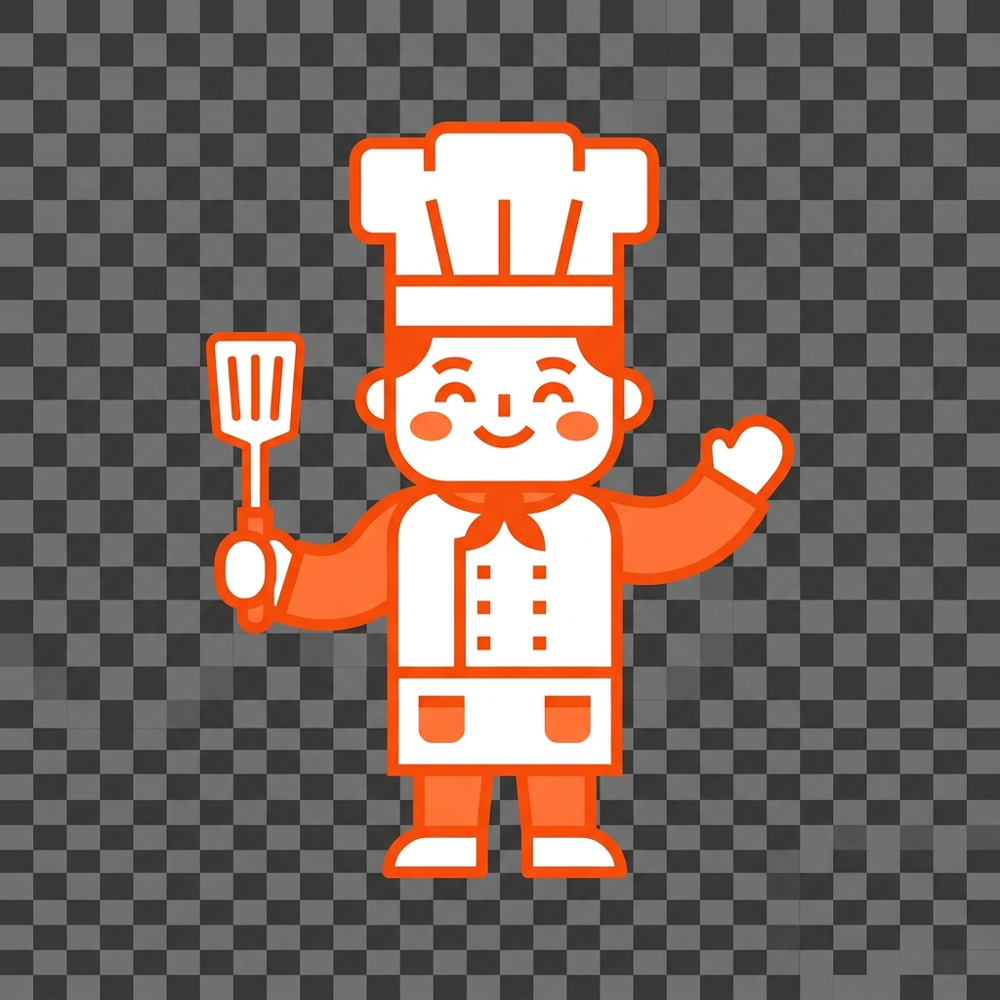
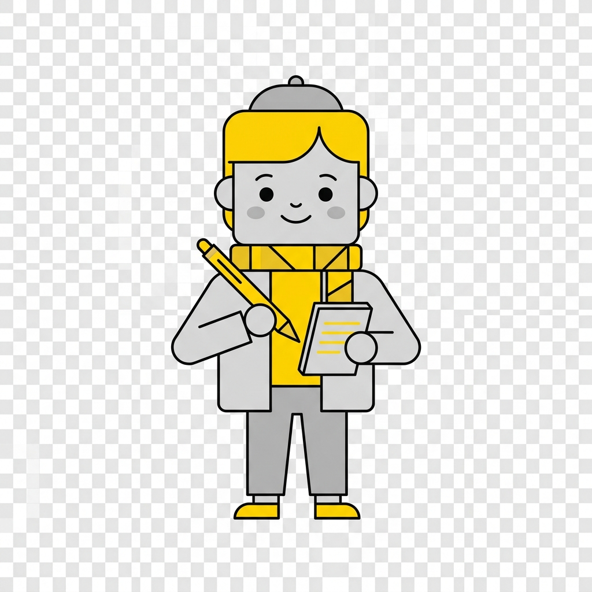

The Pilot
Universal AI Core. Switch between Claude, Gemini, and GPT-4 natively from your taskbar.
activeProvider = 'gemini';

The Chef
Deep Focus Orchestrator. A minimalist Pomodoro engine built into the sidebar's crown.
startTimer(25 * 60);

The Archivist
Clipboard Memory. The last 5 complex data snippets, always ready for injection.
items = history.slice(0, 5);

The Scribe
Quick Capture Engine. Instant sticky notes that anchor to your desktop workspace.
scribe.saveNote(content);